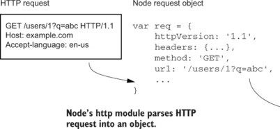

Introduction to NodeJs and ES6

Instructor: Chris Fulton
Learning Objectives
- Node.js
- Installation of NodeJS
- What is NodeJs? | Asynchronous Programming
- Creating and using modules | Practice with Core Modules
- Exporting user-defined modules
- Routing w/core modules - http | fs | email
- NPM
- What is NPM?
- Configuration | Installing & Uninstalling Packages
- Understanding package.json
- NPM commonly used commands and cheatsheet
- Practice with Third-Party Modules
- Practice w/third-party modules - nodemon | Uniq
- Routing with Express - HandleBars.js(front-end) | GET,POST, DELETE, PUT | JSON
- Node and SQLite Walkthrough
Installing NodeJs
- Click here to navigte to
Nodejs website - Click on the LTS version that is recommended for most users.
What is nodejs ?
Node.js® is a JavaScript runtime built on Chrome's V8 JavaScript engine. Node.js uses an event-driven, non-blocking I/O model that makes it lightweight and efficient. Node.js' package ecosystem, npm, is the largest ecosystem of open source libraries in the world.
- Simple description - NodeJs is javascript on the server
Asynchronous Programming
Event-driven ✦ Non-blocking I/O
- Most Languages - Once an event is triggered to perform a task, most languages wait until the task is complete to move onto the next statement
- NodeJs - pushes it to a queue and continues with the next statement. If the server returns something, it callback to whatever triggered the event.
Asynchronous Example
var fs = require('fs');
fs.readFile('subejects.txt', 'utf8', function(err, contents) {
console.log(contents);
});
console.log('after calling readFile');
- What is Non-Blocking?? - Guess the output of above example
- Callback Issues - What are potential issues and benefits of asynchronous
Learning Activity
JS Practice + Refresher

Step 1
Using the above image - define an array that holds each of the items above.
Step 2
Create a function that array and output each of the items in the array you created
Step 3
Create a function that accepts an array as an argument and returns the text "YES" if lentils is within the array.
Modules
Node Modules
Core/Built-in Modules ✦ Third-Party Modules
- File Module Including the path of file in require method
- Core modules are modules that come with NodeJs. You do not have to install them. Click here to see a list of core modules
- Third-Party modules - pushes it to a queue and continues with the next statement. If the server returns something, it callback to whatever triggered the event.
const welcome = require('./welcome'); //including a module that is a file within your program
const http = require('http'); //including a core module example
const app = require('express'); //including third-party module example
Creating your own Module
- Create a file called welcome.js
- Add the code snippet below to your welcome.js file:
exports.welcome = function(){
console.log("You called the welcome method");
}
exports.conclude = ()=>{
console.log("You called the conclude method");
}
Including your user-defined module
- Create a file called index.js and include the exported modules from welcome.js
- Add the code snippet below to your index.js file:
/**The require() function takes one argument of a relative file
path of where the file is located **/
const outputInfo = require('./welcome.js');
outputInfo.welcome(); /** Outputs info to console **/
outputInfo.conclude(); /** Outputs info to console **/
Routing w/Core Modules
Http Core Module
- http module - The HTTP core module is a key module to Node.js networking. Allows for requesting resources across a network.
- Resource - Nodejs.dev
Routing with http Module
Introduction to Node Package Manager (NPM)

What is NPM ?
NPM is the package manager for JavaScript and the world’s largest software registry. Discover packages of reusable code — and assemble them in powerful new ways.
- NPM comes with the installation of Node.js
- Click here to navigte to
npmjs.com
Why use NPM?
Download standalone tools you can use right away.
Share code with any npm user, any where
Form virtual teams (orgs)
Manage multiple versions of code and code dependencies.
Update applications easily when underlying code is updated.
Discover multiple ways to solve the same puzzle.
Commonly used NPM commands
Third Pary Module - Dev. Dependencies
- Nodemon - a tool that helps develop node.js based applications by automatically restarting the node application when file changes in the directory are detected.
- ESLint -
//installing nodemon
npm install --save-dev nodemon
//installing uniq :: https://www.npmjs.com/package/eslint
npm install eslint --save-dev
Basic Express Starter Code
const express = require('express')
const app = express()
const port = 3000
/**To serve static files such as images, CSS files, and JavaScript files, create a folders
* and include the below statement. The below statement assumes that I have a folder named assets
**/
app.use(express.static('assets'))
app.get('/', (req, res) => res.send('Hello World!'))
app.listen(port, () => console.log(`Example app listening on port ${port}!`))
This app starts a server and listens on port 3000 for connections. The app responds with “Hello World!” for requests to the root URL (/) or route.
Express Getting started GuideMiddleWare
const express = require('express')
const app = express()
const port = 3000
/**To serve static files such as images, CSS files, and JavaScript files, create a folders
* and include the below statement. The below statement assumes that I have a folder named assets
**/
app.use(express.static('assets'))
// view engine setup
app.set("view engine", "hbs");
// parse application/json
app.use(express.json());
// For parsing application/x-www-form-urlencoded
app.use(express.urlencoded({ extended: true }));
// Routes
app.get('/', function (req, res) {
console.log("Sent as a get request");
res.render('home', { title: "Routing in Action!"})
})
app.get('/users/:id', function (req, res) {
//Getting id parameter
var id = req.params.id;
console.log("Sent as a get request");
res.render('home', { title: "Routing in Action!", user_id : id})
})
app.get('/contact', function (req, res) {
res.render( 'contact', {title : "Contact Page"})
})
app.post('/submit', function (req, res) {
//Getting body parameters
var data = req.body;
var firstName = data.fname;
var lastName = data.lname;
var id = data.id;
console.log("Sent as a post request");
console.log(firstName + " " + lastName + " " + id );
res.render( 'contact', {title : "Contact Page"})
})
app.listen(port, () => console.log(`Example app listening on port ${port}!`))
Learning Activity
Individual Practice
Using the code from the example we just went through, create a new route that listens for a GET request from the URL below
localhost:3000/movie/101
Step 1
Copy the code from instructors example and start up the server to make sure application properly functions
Step 2
Once the route is created, create a view that displays the id number back to the client
Node.js and SQLite
Getting Started with Implementing SQLite Database
SQLite - Configuration steps below:
- Step 1 - Import database drivers via NPM
- Step 2 - Make connection to database
- Step 3 - Query Database
Step 1 - Install Dependencies
When incorporating a database, we need both the drivers and functionality to configure our session store
npm install sqlite3 //install sqlite database drivers
npm install connect-sqlite3 //install module to configure session store *Needed for authentication
Step 2 - Making a connection to Database
Create a config file that will store your configurtion
var sqlite3 = require('sqlite3').verbose() //npm install sqlite3
//Creating a new database instance - Indication of connected database
//Before peforming any operations to database, make sure database is connected.
let db = new sqlite3.Database('./artist_album.db', sqlite3.OPEN_READWRITE, (err) => {
if (err) {
// Cannot open database
console.error(err.message)
throw err
}else{
//Successful database connection
console.log('Connected to the SQLite database.')
}
});
Step 3 - Context File "database.js"
Helpful to place database operations into a file and import database functions into other parts of program when needed.
Helpful resource on querying database https://www.sqlitetutorial.net/
//Creating a new database instance - Indication of connected database
//Before peforming any operations to database, make sure database is connected.
let db = new sqlite3.Database('./artist_album.db', sqlite3.OPEN_READWRITE, (err) => {
if (err) {
// Cannot open database
console.error(err.message)
throw err
}else{
//Successful database connection
console.log('Connected to the SQLite database.')
}
});
//Get Artist and Album
let getAllArtistAndAlbums = (res) =>{
//var getArtistAndAlbumSQL = 'SELECT ?,?,?,?,? FROM Album INNER JOIN artist ON Album.album_artistID = Artist.artistID';
var getArtistAndAlbumSQL = 'SELECT artistID,artist_name,album_name,album_release_year,album_genre FROM Album INNER JOIN artist ON Album.album_artistID = Artist.artistID';
var params =["artistID","artist_name", "album_name", "album_release_year", "album_genre"];
db.all(getArtistAndAlbumSQL, (err, rows) => {
if (err) {
throw err;
}
res.render('index', {rows})
/**rows.forEach((row) => {
console.log(row.album_name);
});*/
});
}
//Create a Artist
let createArtist = (artistalbum) =>{
var createArtistSql ='INSERT INTO Artist (artist_name) VALUES (?)' //Paramaterized Query
var params =[artistalbum.artistName];
db.run(createArtistSql, params, function(err){
if (err){
return console.log(err.message);
}
console.log("Artist Created");
console.log(`Rows inserted ${this.changes}`);
});
getArtist(artistalbum);
}
//Return a Artist
let getArtist = (artistalbum) =>{
var getArtistSql ="SELECT artistID, artist_name FROM Artist WHERE artist_name = ?"; //Paramaterized Query
var params =[artistalbum.artistName];
console.log(artistalbum.artistName);
//var params=['Michael Jackson'];
db.get(getArtistSql, params, async function(err, row){
if (err){
return console.log(err.message);
}
console.log(row);
//Create Album once we receive the returned ID
await createAlbum(artistalbum, row.artistID);
});
}
//Create a Album
let createAlbum = (album, artistID) =>{
var createAlbumSql ='INSERT INTO Album(album_name,album_release_year,album_genre,album_artistID) VALUES (?,?,?,?)' //Paramaterized Query
var params =[ album.albumTitle,album.albumRelease,album.albumGenre,artistID];
db.run(createAlbumSql, params, function(err){
if (err){
return console.log(err.message);
}
console.log("Album Created");
console.log(`Rows inserted ${this.changes}`);
});
}
//Update record
let deleteRecord = (id) =>{
console.log("Delete Record Function triggered");
//var deleteArtistAndAlbumSql ='DELETE FROM Album WHERE album_artistID= ?' //Paramaterized Query
var deleteArtistAndAlbumSql = 'DELETE Artist FROM Artist INNER JOIN artist ON Album.album_artistID = Artist.artistID WHERE Album.album_artistID = ?';
var params =[id];
db.run(deleteArtistAndAlbumSql, params, function(err){
if (err){
return console.log(err.message);
}
console.log("Album and Artist Deleted");
console.log(`Rows deleted ${this.changes}`);
});
}
//Export functions to be used in other areas of program.
module.exports = {getAllArtistAndAlbums, createArtist, getArtist, deleteRecord, createAlbum}
Grocery List App
Video Lectures
References
- https://scotch.io/courses/build-a-restful-nodejs-api/post-put-delete-requests